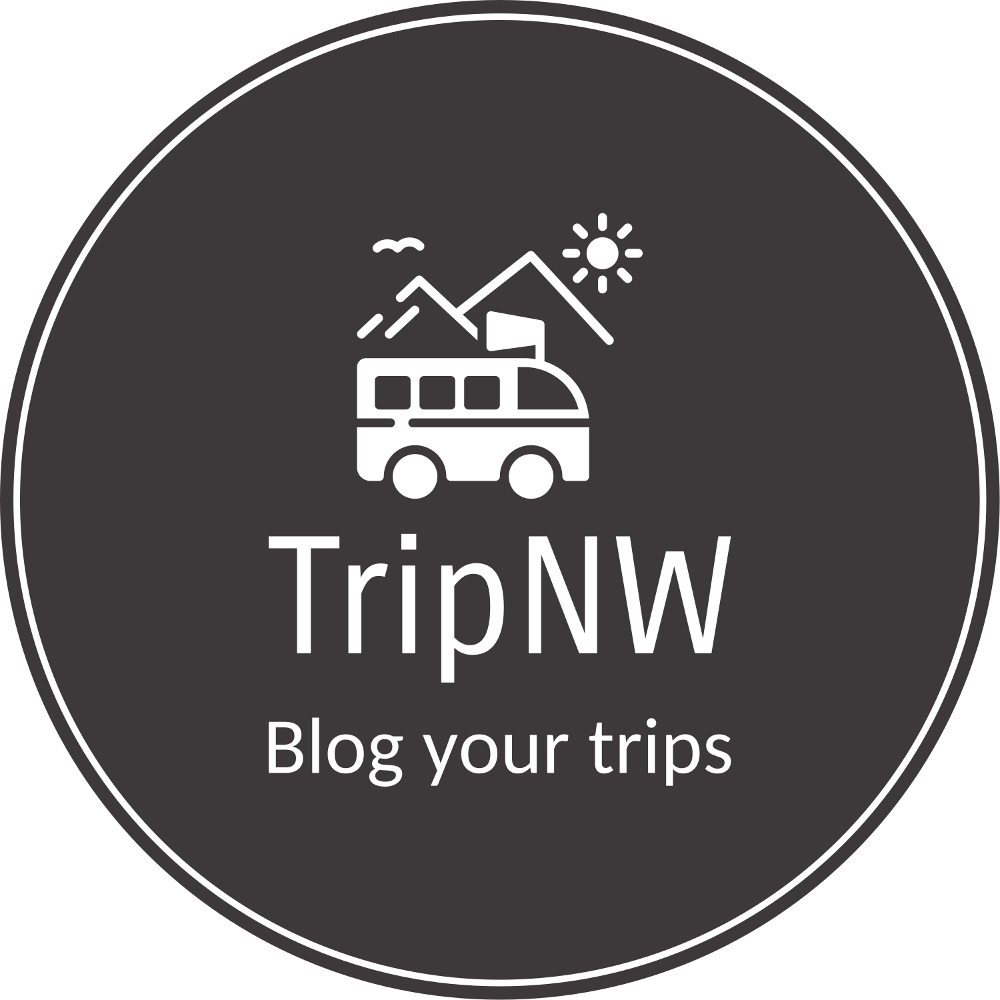

<nav
  class="navbar navbar-expand-lg py-1"
  style="
    background: linear-gradient(
      90deg,
      rgb(145, 193, 253) 12.9%,
      rgb(247, 224, 229) 91.2%
    );
  "
>
  <div class="container-fluid">
    <a
      class="navbar-brand me-5 py-0 my-0"
      role="button"
      (click)="routeToHome()"
    >
      
      <strong style="padding-left: 5px">TripNW</strong>
    </a>

    <button
      class="navbar-toggler"
      type="button"
      data-bs-toggle="collapse"
      data-bs-target="#navbarScroll"
      aria-controls="navbarScroll"
      aria-expanded="false"
      aria-label="Toggle navigation"
    >
      <span class="navbar-toggler-icon"></span>
    </button>
    <div class="collapse navbar-collapse" id="navbarScroll">
      <!-- Search form -->
      <form class="d-flex me-2 pt-1" role="search">
        <input
          class="form-control me-2"
          type="search"
          placeholder="Type to Search"
          aria-label="Search"
          (input)="onSearch()"
          name="search"
          [(ngModel)]="searchKeyword"
        />
        <!-- <button class="btn btn-outline-success" (click)="onSearch($event)">Search</button> -->
      </form>

      <div class="d-flex ms-auto">
        <!-- Conditional buttons/links -->
        <div *ngIf="authService.loggedIn; else loggedOutButtons" class="me-2">
          <ul class="navbar-nav me-auto my-2 my-lg-0 navbar-nav-scroll">
            <li
              class="nav-item mx-1 px-2 mb-1"
              (click)="routeToHome()"
              style="border: black 1px solid; border-radius: 30px"
            >
              <a class="nav-link active">Home</a>
            </li>
            <li
              class="nav-item mx-1 px-2 mb-1"
              (click)="routeToMyBlogs()"
              style="border: black 1px solid; border-radius: 30px"
            >
              <a class="nav-link active">My Blogs</a>
            </li>
            <li
              class="nav-item mx-1 px-2 mb-1"
              (click)="routeToChats()"
              style="border: black 1px solid; border-radius: 30px"
            >
              <a class="nav-link active">Chats</a>
            </li>
            <li
              class="nav-item mx-1 px-2 mb-1"
              (click)="routeToProfile()"
              style="border: black 1px solid; border-radius: 30px"
            >
              <a class="nav-link active text-muted">
                <strong> My Profile </strong>
              </a>
            </li>
            <li
              class="nav-item mx-1 px-2 mb-1"
              (click)="Logout()"
              style="border: black 1px solid; border-radius: 30px"
            >
              <a class="nav-link text-danger">Logout </a>
            </li>
          </ul>
        </div>
        <ng-template #loggedOutButtons>
          <div class="btn-group">
            <button
              class="btn btn-outline-primary"
              id="loginBtn"
              (click)="LogIn()"
            >
              Login
            </button>
            <button
              class="btn btn-outline-secondary"
              id="signupBtn"
              (click)="signup()"
            >
              Signup
            </button>
          </div>
        </ng-template>
      </div>
    </div>
  </div>
</nav>
<ion-content *ngIf="showSearchResults" class="search-result">
  <p *ngIf="searchResults.length === 0" class="fw-bold text-warning">
    No blogs found matching.
  </p>

  <ion-grid>
    <ion-row>
      <ion-col
        size="12"
        sizeMd="6"
        *ngFor="let post of searchResults"
        class="home-cards"
        (click)="openBlog(post.title, post.id)"
      >
        <app-blog-card-home [post]="post"></app-blog-card-home>
      </ion-col>
    </ion-row>
  </ion-grid>
</ion-content>
